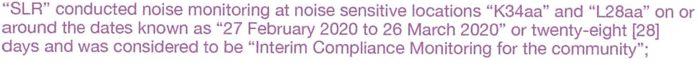
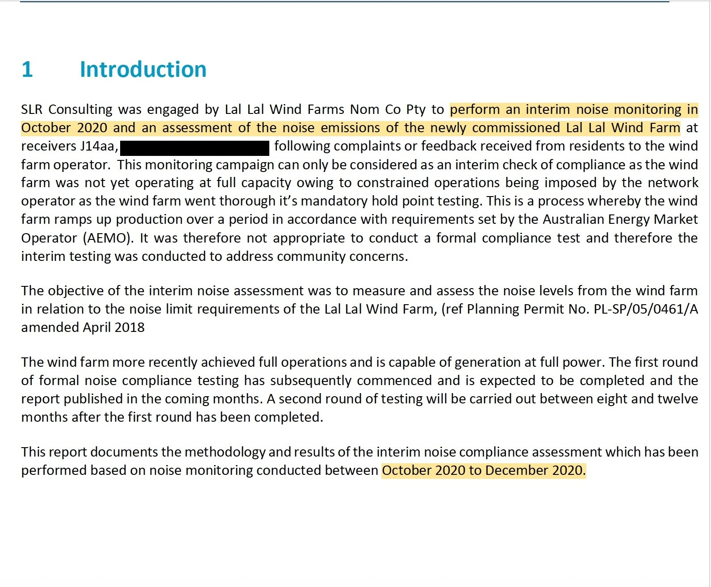
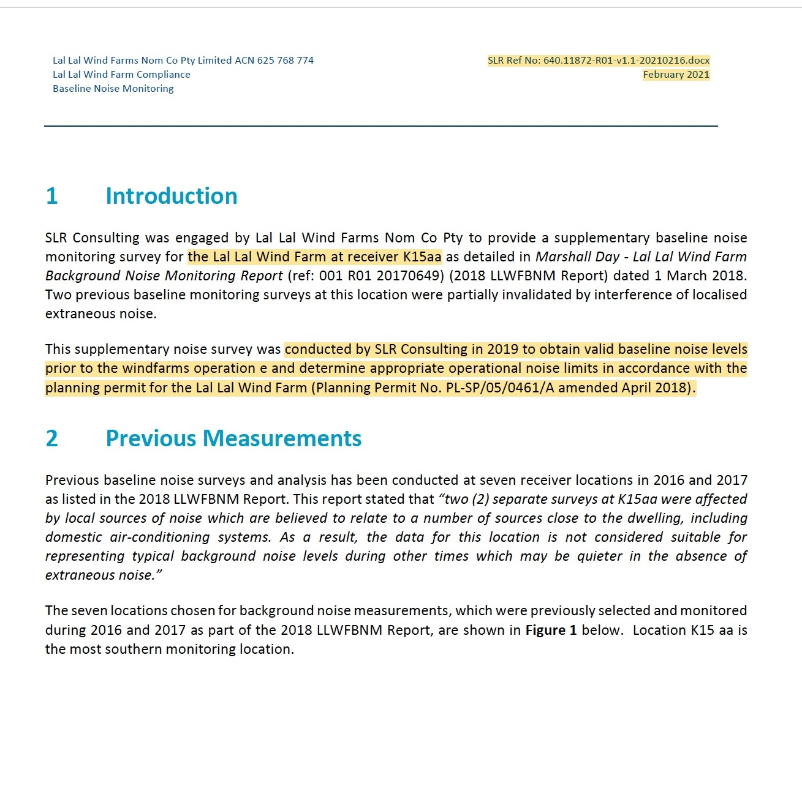
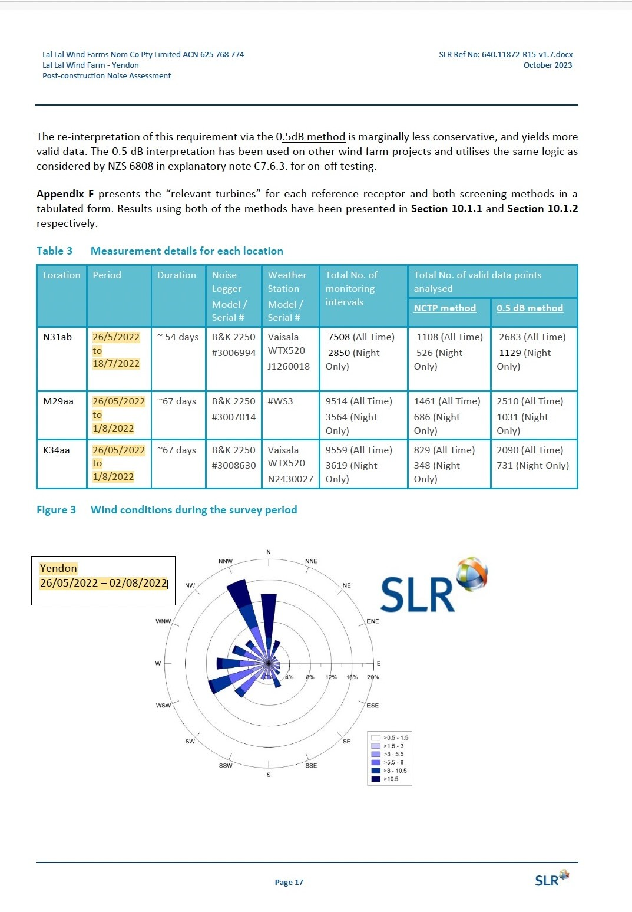
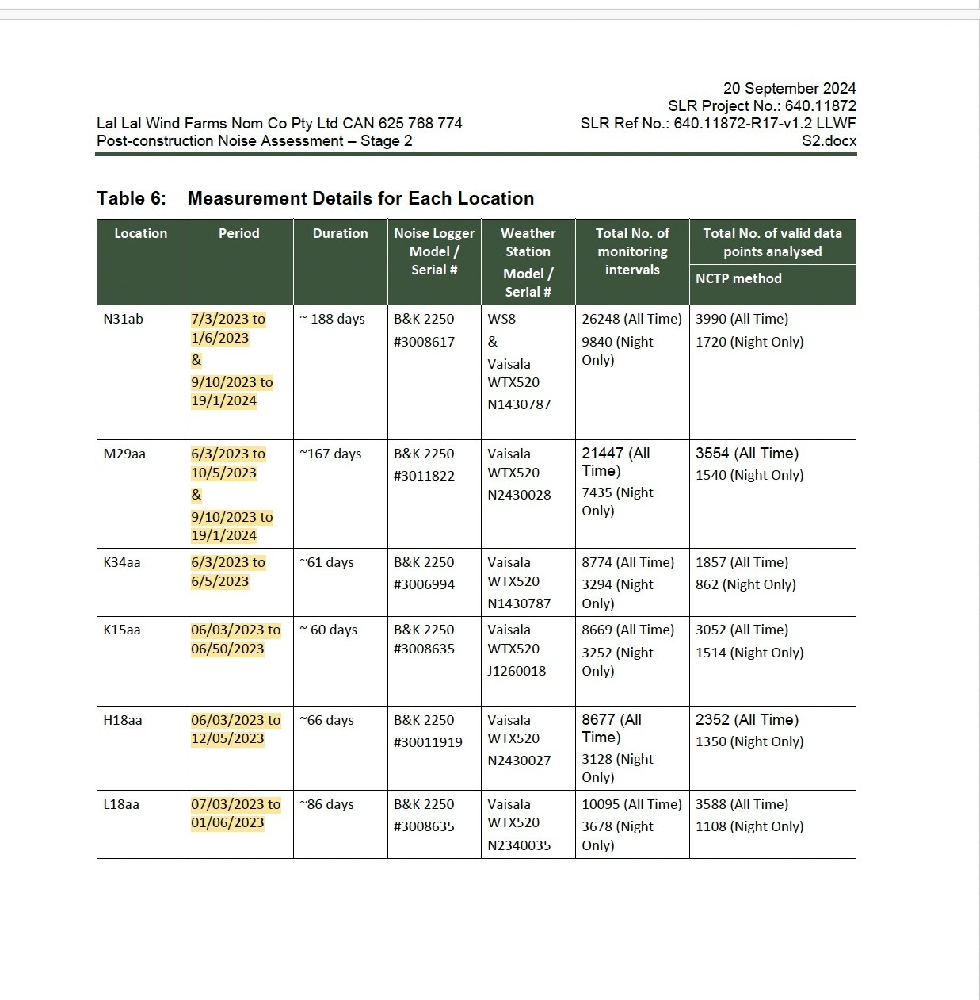

A concise chronological guide to the principal planning, construction, generation, commissioning and operational noise-compliance milestones identified in the available documentary record.
This page provides a high-level documentary sequence. It does not replace the detailed chronology, technical-report pages or governing-framework analysis.
2007
Initial background noise monitoring
Background sound monitoring was undertaken during the original pre-construction assessment period. This material formed part of the technical record preceding the 2008 noise assessment.
Documentary source: Marshall Day Acoustics background monitoring record.
5 February 2008
Marshall Day Noise Assessment
Marshall Day Acoustics issued its Lal Lal Wind Farm Noise Assessment for WestWind Energy Pty Ltd. The report is an early technical assessment within the project’s planning record.
Documentary source: Marshall Day Acoustics, Report 001 R01 2007344, 5 February 2008.
30 April 2009
Planning Permit issued
The planning permit established the project approval and the conditions governing development, operation and later noise-compliance assessment.
Documentary source: Planning Permit PL-SP/05/0461, issued 30 April 2009.
20 March 2017
Planning Permit amended
The permit was amended before construction. The amendment forms part of the governing planning framework applicable to the project.
Documentary source: Planning permit amendment dated 20 March 2017.
23 January 2018
Noise Compliance Testing Plan
Marshall Day Acoustics issued the endorsed Noise Compliance Testing Plan. It records the operational measurement and reporting pathway and identifies K15aa for updated background monitoring before operation.
Documentary source: Marshall Day Acoustics, MDA 003 R03, 23 January 2018.
May 2018
Construction commenced
The project bulletin advised that construction would commence at the end of May 2018, with civil works, access roads, the site compound and substation works forming part of the initial program.
Documentary source: Lal Lal Wind Farms Project Update, May 2018.
20 June 2019
Generation commenced
Lal Lal Wind Farm commenced generating power before completion of commissioning. The 15 April 2025 LLWF letter records that the Yendon section commenced generating power on 20 June 2019.
Documentary source: LLWF letter dated 15 April 2025.
July–November 2019
Supplementary K15aa background monitoring
Supplementary monitoring later reported by SLR was undertaken during this period. Its timing is read alongside the construction, energisation, generation and commissioning chronology.
Following a blade incident at Yendon on 15 September 2019, operation of all turbines at Lal Lal Wind Farm was suspended as a standard precautionary safety measure. On the afternoon of 16 September 2019, operation resumed on all turbines except those in the Yendon section, which remained under inspection.
The Community Reference Group record states that construction was complete while commissioning continued, documenting the transition between construction and operation.
Documentary source: Community Reference Group minutes, 1 October 2019.
18 November 2019
Final turbine commissioned
The December 2019 Community Reference Group record identifies 18 November 2019 as the date used for the final turbine commissioning milestone and the associated landscaping-program closure date.
Documentary source: Community Reference Group minutes, 4 December 2019.

27 February–26 March 2020
Interim Compliance Monitoring for the community
It is the Trustee's understanding that SLR also conducted an interim noise monitoring program during this period. The available documentary material records: “SLR” conducted noise monitoring at noise sensitive locations “K34aa” and “L28aa” on or around the dates known as “27 February 2020 to 26 March 2020” or twenty-eight [28] days and was considered to be “Interim Compliance Monitoring for the community”;
Documentary source: Quoted documentary extract reproduced verbatim from the available record.

October–December 2020
Interim noise monitoring
SLR undertook interim monitoring after the wind farm had been newly commissioned but while constrained operations remained in place during AEMO hold-point testing. The report described the work as an interim check of compliance rather than the formal post-construction program.
Documentary source: SLR Interim Noise Monitoring Report, April 2021.

16 February 2021
SLR supplementary K15aa baseline report issued
The supplementary background monitoring undertaken during 2019 was formally documented in SLR's Baseline Noise Monitoring report issued on 16 February 2021. The report states that the 2019 survey was undertaken to obtain valid baseline noise levels prior to the wind farm's operation and to determine the appropriate operational noise limits for receiver K15aa in accordance with the Planning Permit.
Formal Stage 1 monitoring for the Elaine section was undertaken during this period. The report records a monitoring duration of approximately 54 days at K15aa, H18aa and L18aa.
Documentary source: SLR Post-construction Noise Assessment — Elaine, October 2023.
12 April 2022
Planning Permit amended
A further permit amendment was issued on 12 April 2022. The amendment is retained separately within the permit chronology and documentary hierarchy.
Documentary source: Planning permit amendment dated 12 April 2022.

26 May–2 August 2022
Yendon Stage 1 monitoring
Formal Stage 1 monitoring for the Yendon section followed approximately one year later. The report records monitoring at N31ab, M29aa and K34aa during this period.
Documentary source: SLR Post-construction Noise Assessment — Yendon, October 2023.

March 2023–January 2024
Stage 2 monitoring — Elaine and Yendon
The Stage 2 program covered both the Elaine and Yendon sections through monitoring campaigns undertaken between March 2023 and January 2024. The final Stage 2 report was issued on 20 September 2024.
The permit was amended again on 15 May 2026, including changes associated with the later regulatory framework and responsible-authority arrangements.
Documentary source: Planning permit amendment dated 15 May 2026.
Reading position: Dates are attributed to the identified documentary sources. Where the wider record contains differing commissioning or operational descriptions, those distinctions remain preserved in the detailed chronology and verification pages.
Administrative record
2026 documentary reconciliation of the commissioning milestone
The chronology preserves different source descriptions of commissioning and does not resolve them by assumption. Two 2026 FOI pathways add information about the formal records held by Council and DTP.
15–22 April 2026 — Council pathway
Council FOI SR.142870 records searches for commissioning certificates, notifications, milestone registers and internal records, with no responsive documents found. The Trustee's later Governance clarification records why the milestone matters to the post-construction chronology and requests confirmation of Council's administrative position.
DTP FOI CS019200 records eight documents located but no commissioning certificates, individual turbine commissioning records, practical completion certificates or handover certificates located. The Trustee sought clarification concerning the applicant identity and Part 4 of the request.